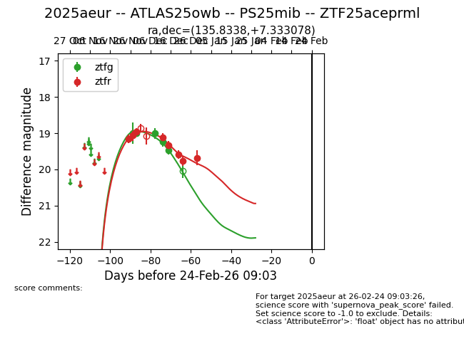
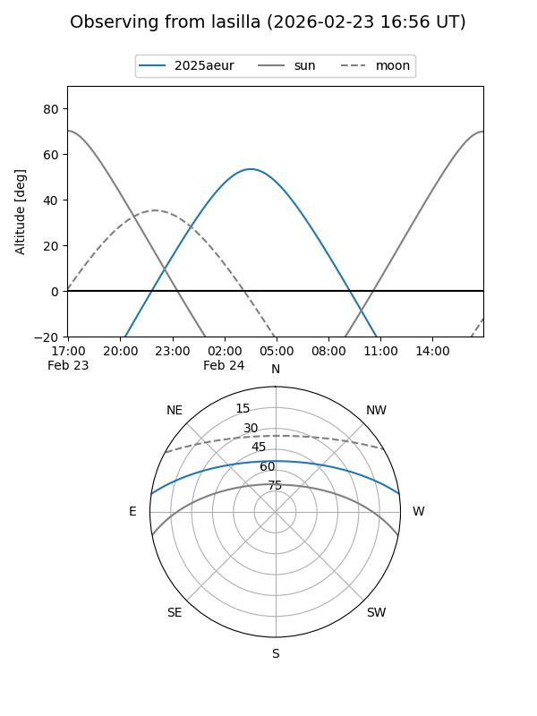
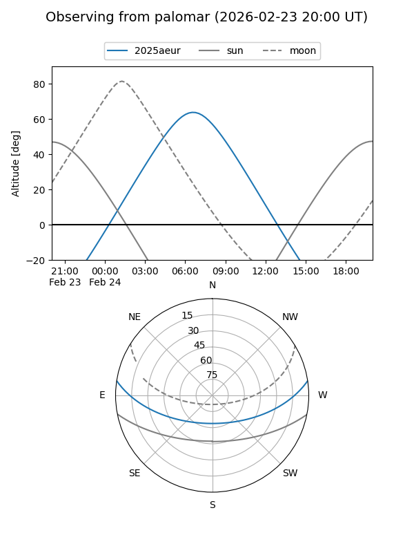
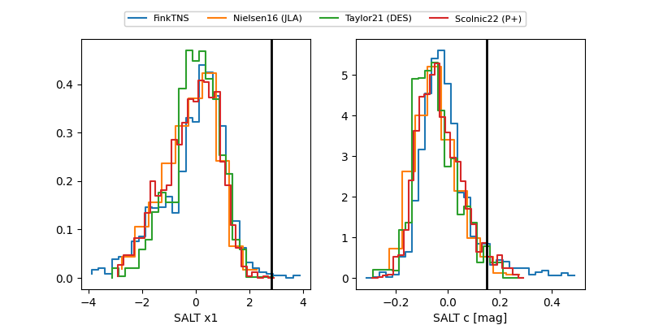

2025aeur
Target 2025aeur at 2025-12-31 17:00
Aliases and brokers:
FINK:
Lasair:
ALeRCE:
TNS:
YSE:
alt names
ZTF25aceprml (ztf,fink_ztf)
2025aeur (tns,yse)
ATLAS25owb (atlas)
Coordinates:
equatorial (ra, dec) = 135.8338,+7.33308
equatorial (HMS+DMS) = 09:03:20.12,+07:19:59.08
galactic (l, b) = (221.9833,+32.59019)
Flags:
Photometry:
last atlasc=19.20, atlaso=19.26, ztfg=19.46, ztfr=19.68
2 atlasc, 2 atlaso, 4 ztfg, 8 ztfr detections
Lightcurve

Visibility


Additional plots
